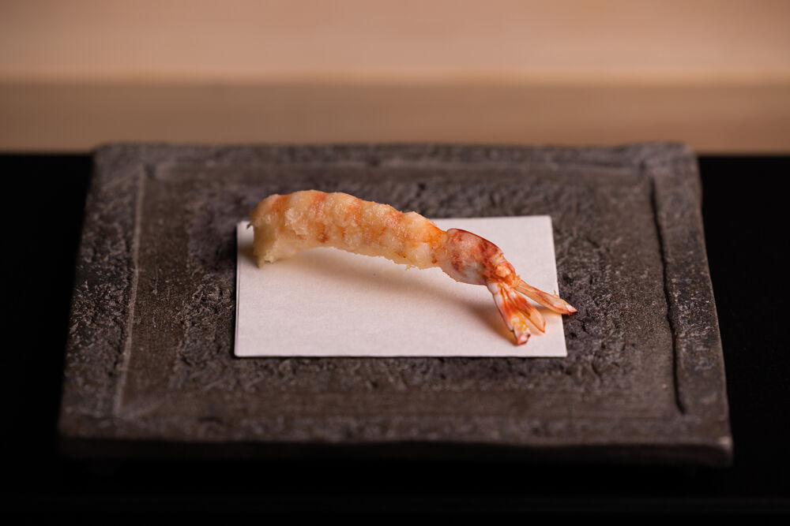

Kaiseki
the elaborate multi-course Japanese meal built around seasonality, quality ingredients and simple
preparations.
Customers will be served with a simple multi-dish meal as a preclude to a few cups of matcha, or a more
elaborate meal accompanied with sake and ending with a simple tea service.
There is a difference between omakase. While kaiseki is a highly ritualized meal with a specific ebb and
flow, omakase changes with each occasion, with the chef making decisions about what to cook mid-course.
Often considered to be the haute cuisine of Japan, kaiseki traditionally consists of nine courses (though
one can find variants with anywhere from six to 15 courses). Each course is defined by a particular cooking
method, and typical courses may include:
- Sakizuke: similar to the French amuse bouche, this first course is usually something pickled to whet the diners' appetite for the courses to follow
- Hassun: this course marks the seasonality of the meal
- Suimono: a soup course made with a dashi broth base; it is revered as the most important course in a kaiseki sequence—and the mark of a chef’s ability
- Tsukuri: a sashimi course
- Yakimono: a grilled course
- Takiawase: a simmered dish, typically of vegetables mixed with some meat
- Shokuji: a rice course (gohan), served with miso soup and pickles
- Mizugashi or Mizumono: a platter of Japanese sweets or fruits
Yakitori
“Yakitori” literally means “grilled chicken”. It is often offered with a choice of shio (salt) or tare
(pronounced tah-reh), a thick, sweet sauce that’s
a key seasoning ingredient of dishes such as ramen. Most chefs have their own secret recipe.The amazingly
crispy,juicy and flavorful skewers will change your idea about yakitori.
As they are designed for convenience and portability, yakitori are typically cooked using step-by-step methods.
Traditionally, it was accomplished using portable charcoal grills. That is the method most often employed by
yatai, however, restaurants may use stationary grills and, depending on the situation, higher quality binchōtan
charcoal.
To facilitate even cooking, the meat is cut into small, roughly uniform shapes and then
skewered with kushi;
after which the yakitori are seasoned and cooked. Charcoal is the preferred method of cooking as it produces
high heat and strong flames while giving off little to no water vapor. This allows for the ingredients to cook
quickly while imparting a crunchy texture to the skin. While gas and electric heat sources can be used, they do
not develop the same aromas or textures as charcoal-cooked yakitori.

Tempura
Tempura (天ぷら) are pieces of lightly battered, deep fried seafood and vegetables. Introduced to Japan during the
16th century by the Portuguese in Nagasaki, tempura has developed over the centuries into a popular Japanese
dish both inside and outside of Japan. Tempura can be found in many types of restaurants across the country,
where it is commonly served as a main dish, side dish or as a topping for tendon rice bowls, or udon and soba
noodle dishes. The following are some of the most popular varieties of tempura pieces: